鳥図鑑
Birdzzleに登場する48種の鳥たちです(全員イラスト上の存在で、実在の鳥ではありません)。繁殖で生まれる組み合わせは、ネタバレを避けるためここには載せていません。
 Sunnyおひさま色のムードメーカー
Sunnyおひさま色のムードメーカー Bellのんびり屋の青い鳥
Bellのんびり屋の青い鳥 Ruby情熱の赤い冠羽
Ruby情熱の赤い冠羽 Pearl真珠のようにやさしい
Pearl真珠のようにやさしい Mint風のように軽やか
Mint風のように軽やか Amberあたたかい頼れる存在
Amberあたたかい頼れる存在 Indigo星空をまとった物知り
Indigo星空をまとった物知り Violetミステリアスな貴婦人
Violetミステリアスな貴婦人 Coral人なつっこい日だまり
Coral人なつっこい日だまり Aurora空を染める幻の鳥
Aurora空を染める幻の鳥 Creamミルクのようにまろやか
Creamミルクのようにまろやか Limeすっきり元気いっぱい
Limeすっきり元気いっぱい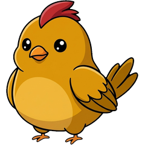
Marigold花畑の元気印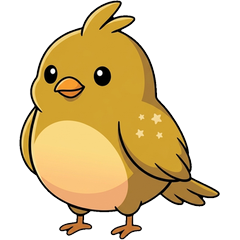
Citrineきらめく黄水晶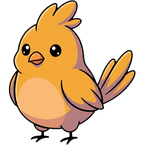
Saffron高貴なスパイス色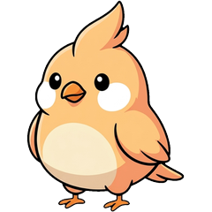
Peachふんわり桃色のあまえんぼ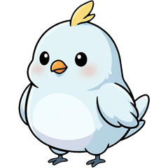
Frost冬の朝のように静か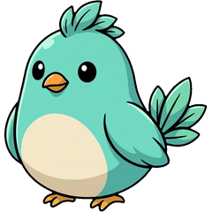
Aqua水辺のおさんぽ好き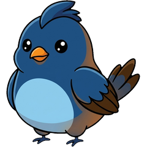
Sapphire深い青の誠実者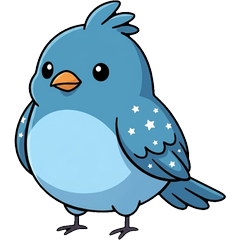
Azure青空を写した旅人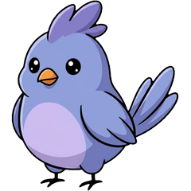
Periwinkle青紫の夢見がち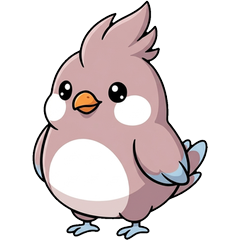
Powder粉雪みたいに控えめ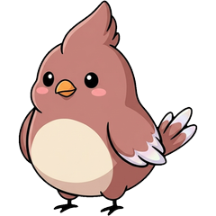
Rosewood古い木のぬくもり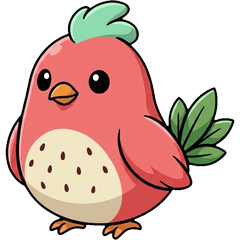
Watermelon夏のスイカ畑から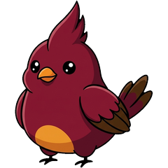
Garnet情熱を秘めた赤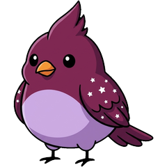
Plum熟した果実のような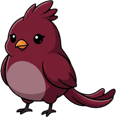
Wine夜ふけのワイン色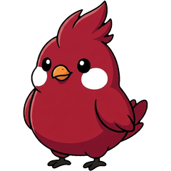
Crimson燃える紅の戦士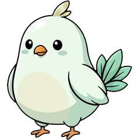
Seafoam波しぶきのやさしさ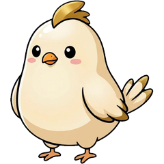
Champagneお祝いの日のきらめき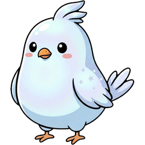
Moonstone月の光を宿した石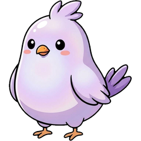
Lilacライラックの香り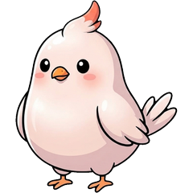
Blushほんのり赤らむ恥ずかしがり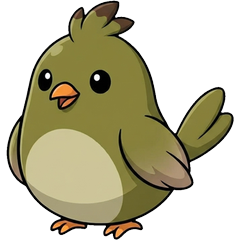
Olive森の物知りおじいさん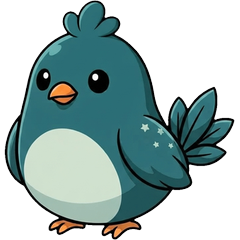
Teal深い湖の静けさ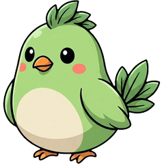
Spring春いちばんの知らせ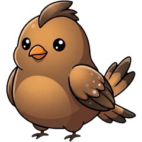
Bronze古い鐘のような貫禄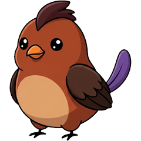
Sienna夕暮れの土の色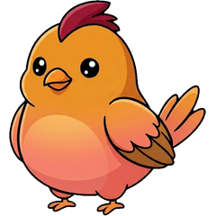
Sunset夕焼けを連れてくる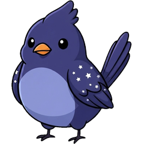
Twilight夜がくる前の青紫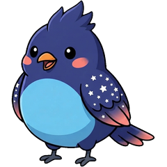
Cobaltコバルトの切り込み隊長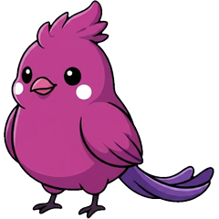
Magenta派手好きな人気者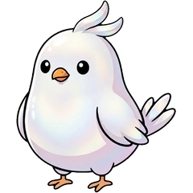
Opal七色にゆらめく宝石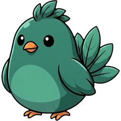
Jade森の奥の落ち着いた賢者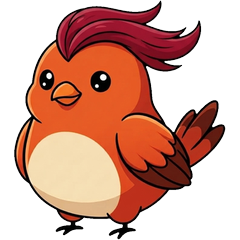
Ember燃えさしのぬくもり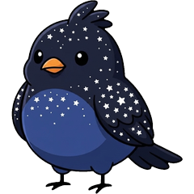
Midnight星をまとった夜の鳥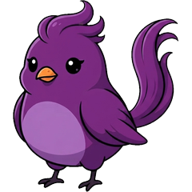
Orchid華やかなダンサー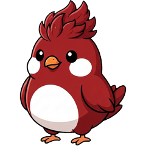
Scarlet夕焼けみたいな赤いリーダー